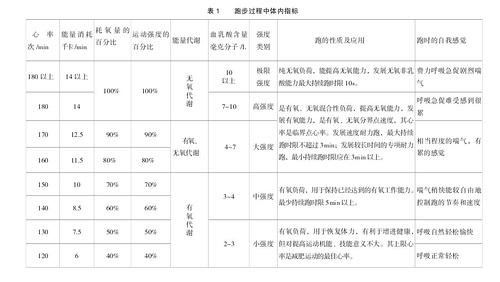
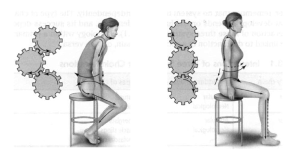
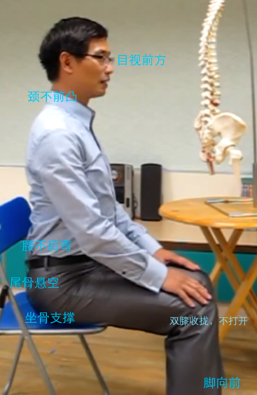
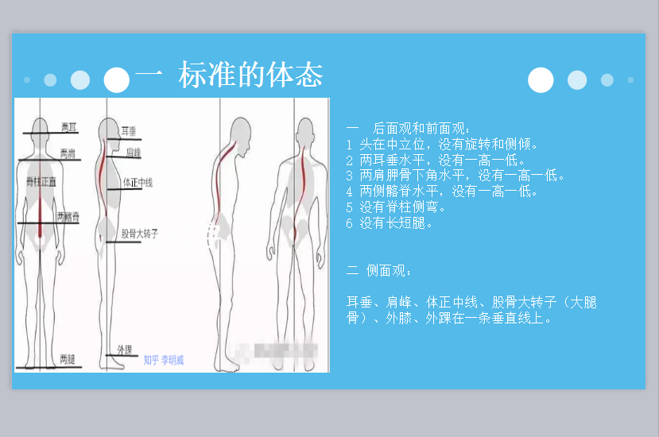

运动
运动的意义
运动对于人的各个方面都有一定的好处。从科学的角度来说，可以促进血液循环，增强心肺功能，提高身体免疫力。运动也可以帮助睡眠，保持好心情。当今社会，由于生产方式的改变，导致人们运动越来越少。但是从人的天性来说，有一定的运动量才符合人们的生物规律。一个好的身体也是工作的本钱，如果生一场大病那么你将无法完成任何事情。所以说适当的运动，对于人的各个方面都非常有用，你一定需要在日程中安排固定的时间来运动
运动的目标
运动的目标多种多样，我认为有以下几种目的：
- 增加肌肉
- 减少脂肪
- 训练耐力
- 训练力量
- 塑造形体
每一种运动的目的都可以产生不同的运动计划和方法，弄清楚自己的训练目标非常重要。可以从以下三个方面来思考
A. 自我定位：
- 我是什么样的体型， 这种体型有什么样的特点？
- 我的身体素质和运动经验如何？
B. 理想目标（ 一定条件下， 有些目标可以并行） ：
- 我想要更少的体脂含量， 让自己看起来更苗条？
- 还是更健康的身体线条， 紧致身姿？ 或是更大的肌肉维度， 让自己硬朗阳刚？
- 抑或是我想要更强的力量速度， 提高自己的运动表现？
- 我有哪些部位需要雕琢？ 这些部位需要向什么样的方向改善？
C. 我手中可利用的资源：
- 我的训练地点是哪， 有什么器械可利用？ 在健身房、 学校操场， 还是在家训练？
- 我一周能用在健身上的时间是多少？ 怎么分配的？
- 我饮食怎么安排？ 自己做饭还是在食堂吃？ 准备用健身补剂么？
思考完这些， 我们就可以着手安排最适合自己的训练计划。
运动计划的安排
A. 训练时间安排：
a. 一周要安排几次训练？ b. 这几次训练我都需要用多少时间？
B. 训练项目的具体安排：
a. 为了我的目标， 我要怎么安排训练项目？ b. 训练强度， 其中无氧运动要考虑重量、 次数、 组数、 间歇时间。 有氧运动要考虑速度、 阻力、 时间。
C. 饮食营养的安排： a. 为了达成我的目标， 考虑今天的饮食我该吃多少， 怎么吃， 什么时候吃。 b. 健身补剂的运用。
运动的方法
减脂
我觉得减脂需要从饮食和运动两方面来共同努力，俗话说：“管住嘴，迈开腿”就是这个道理。但是有人认为节食就可以减肥，这个虽然有短期效果，但是体重最后会反弹。原因就是人身体会随着你的供能的改变调整身体的代谢水平，也就是说身体的消耗会随着变少。这是人会继续按以前的水平累计热量，也就达不到减肥的效果了。
所以减脂需要配合健康的膳食饮食方式以及效果好的健身方式。
长跑一直被认为是一种有效的手段，但是对于体重大的人来说，跑步等运动会在脂肪和关节等部位引起共振，共振的效应最后会引起身体与关节的损伤，实验也发现长时间有氧运动对于体重的影响微乎其微。而采用高强度间歇性训练(HIIT)则会对于减脂有较大的帮助(存疑)
HIIT是采取有氧和无氧运动相结合的方式，是间歇性地提高与降低运动强度， 某种程度上自己可以排列组合。 只要是大肌群训练。高强度是指在运动时心率可以达到最大心率的85%。训练的方法包括
- 出拳 热身运动 下肢不断移动
- 俯卧撑
- 深蹲跳 重点是臀部向后坐
- 原地高抬腿跑
- 星状跳
- 仰卧起坐
- 平板支撑
耐力
在耐力的训练上采取的做法主要是有氧运动，如游泳，跑步，骑自行车。这些运动的耗时较长，也常常是个人运动，这段时间可以适当利用。
跑步
个人跑步多年，对于跑步也有一些自己的看法。跑步可以促进人们的心肺功能，减轻重量，然而效果有限，容易达到体重的平衡点。总的来说，跑步是一个非常健康的生活习惯，也属于一种人类本性的释放。近年来，马拉松运动也成为越来越多人们参与的项目，大家也都认识到跑步对于个人健康的好处。
在跑步前需要补充适当的能量，早起空腹不可以跑步，一定要吃一点东西。我一般喜欢下午饭前跑步，这样效果也比较好。跑前也需要选择一双合适的跑鞋，不能跑步时感觉不适，防止受伤。
在跑步时也需要注意跑步的姿势的正确，保持正确的跑步姿势可以更加省力，保持良好的体态。注意以下几点
- 身体稍向前倾，加快步频，脚步轻盈
- 腿不要太高，减少对于关节的冲击
- 脚掌中部(?)着地着地后快速离地，尽量让自己舒服。
跑步后也要注意拉伸，如两手交叉向上伸展，一手在脑后抓住另一只手肘，单脚站立，一手抓住另一只脚踝。
跑步的心率也和效果有一定的关系 
力量
在力量的训练上本人接触不多，无器械运动的方式主要有俯卧撑，下蹲，引体向上。（待补全）
体态
正确体态的重要性
保持一个正确的体态可以保证自己不受颈椎病的困扰，同时如果长时间错误的站姿和坐姿，会影响美观，气质 影响身高。脖颈和臀部不适，颈肩和后背易疲劳；出现头晕，影响头部供血。所以说保持好的体态对于一个人的健康非常重要。
正确的体态及维持方法
坐姿
错误的坐姿如左图，正确的坐姿如右图。知乎链接  在面对电脑时的坐姿应该是这样的，有这些注意事项  好的坐姿需要
- 目光直视
- 颈不前凸
- 腰不后弯
- 尾骨悬空
- 坐骨支撑
- 双膝收拢
站姿
正确的站姿如下图：

1） 重心不能左右偏移，始终在双脚之间 2） 重心不能前后偏移，始终落在脚的后 1/3 3） 足趾要有意识抓地，让足弓稍微顶起来，但是不能出现明显动作 4） 膝盖和脚尖的方向始终一致，膝盖不能伸过直也不能左右偏移 5） 臀部和腰腹要有意识收缩，让重心尽量高，但是不能出现明显收缩动作，这会影响呼吸 6） 肩要保持下沉向后稍微收回，自我意识锁骨向两端延伸，让胸腔打开 7） 下巴稍微回收，保持头落在肩的正上方，不要过度前倾。
工作期间的活动
长期伏案工作的危害与好处
长时间持续工作看起来工作很认真，但是对于大多数人来说，工作时间越长，工作效率会越低。因为会导致思维涣散，脑部供血不足，无法专心处理手边的事情，这时候就需要起来动一动，走一走。缓解一下疲劳，使自己可以精力充沛的投入到下一个时间段的工作之中。可以与番茄工作法结合。
起来走走的好处有以下这些：
- 走路可以增强神经元之间的联系，帮助记忆 ；产生BDNF，可以帮助记住新事物，达到learning potential
- 每小时5分钟的运动可以帮助你减少患疾病的概率
在走路时注意弯曲手臂、手握拳握的比较松、肩膀放松、走短而快的步伐、腹部呼吸
间歇的活动的方法
视力
- 看看远方，做几个深呼吸，这样可以放松眼部肌肉。找一处10米以外的草地或绿树,不要眯眼，也不要总眨眼，排除杂念、集中精力、全神贯注的凝视25秒，辨认草叶或树叶的轮廓。接着把左手掌略高于眼睛前方30厘米处，逐一从头到尾看清掌纹，大约5秒。看完掌纹后再凝视远方的草地或树叶25秒，然后再看掌纹。10分钟时间反复20次
- 多眨眼。全神贯注的在电脑前工作的时候，人会降低眨眼的次数，你可以有意识的每隔10-15秒眨眼一次。
- 转眼：双手托腮，让眼球按上、下、左、右的顺序转动10次，接着再逆时针、顺时针各转动10次
缓解颈椎疲劳
- 保持肩膀固定不动,用下巴在矢状面上画圆，顺时针6次，逆时针6次
- 头往后收，抬头，画圆
- 站姿直背体前屈
运动
- 深蹲。注意腰部挺直
- 深蹲跳。下落时注意膝盖缓冲
- 伏地登山
- 波比跳
- 开合跳